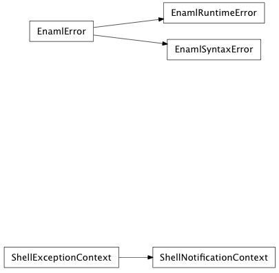

The top-level enaml package contains some utility modules used throughout the Enaml library.
A dialog’s result (depending on how it was closed)
| value | description |
|---|---|
| accepted | The user accepted the dialog. |
| rejected | (default) The user declined the default result. |
Generic orientation values.
| value | description |
|---|---|
| horizontal | Horizontal orientation |
| vertical | Vertical orientation |
The position of the tabs in a Tabbed container.
| value | description |
|---|---|
| top | (default) Place tabs above the main content. |
| bottom | Place tabs below the main content. |
| left | Place tabs to the left of the main content. |
| right | Place tabs to the right of the main content. |
Horizontal alingment.
| value | description |
|---|---|
| left | (default) Align left |
| right | Align right |
| center | Align center |
A container’s layout style, based on the order of insertion.
| value | description |
|---|---|
| left_to_right | (default) Position children from left to right. |
| right_to_left | Position children from right to left. |
| top_to_bottom | Position children from top to bottom. |
| bottom_to_top | Position children from bottom to top. |
A window’s modality specifies whether it captures focus.
| value | description |
|---|---|
| non_modal | (default) The window is not modal. |
| window_modal | The window blocks input to its parent, and all ancestor windows. |
| application_modal | The window blocks input to all other windows in the application. |
The position of ticks for a control.
| value | description |
|---|---|
| not_ticks | (default) Do not display ticks. |
| left | Display ticks to the left of the element. |
| right | Display ticks to the right of the element. |
| top | Display ticks above the element. |
| bottom | Display ticks below the element. |
| both | Display ticks both above the element and below it, or to both the left and the right. This might vary with Orientation. |
The ordering of a sort.
| value | description |
|---|---|
| ascending | Elements will be in ascending order. |
| descending | Elements will be in descending order. |
The result of a validation function.
| value | description |
|---|---|
| invalid | The input was clearly invalid. |
| indermediate | The input is invalid, but further input could make it valid. |
| acceptable | The input is valid. |
The strength of widget expand and clip preferences for hug and resist_clip.
| value | description |
|---|---|
| ignore | No constraint shuld be created. |
| weak | The constraint should be created, but is weak. |
| strong | The constraint should be created, but is strong. |
| required | The constraint should be created, and is required. |
The selection mode for item views.
| value | description |
|---|---|
| extended | Same as contiguous except that the Cmd key can be used to start multiple non-contiguous selection regions. |
| single | A single item may be selection. |
| contiguous | A contiguous range of items may be selected using the Shift key. |
| multi | Clicking on an item toggles its selection. |
| none | No selection allowed. |
What kind of items may be selected in item views.
| value | description |
|---|---|
| items | Individual items, like table cells. |
| rows | Only whole rows, not individual table cells. |
| columns | Only whole columns, not individual table cells. |
Exactly what actions to do when programmatically setting the selection in item views.
| value | description |
|---|---|
| no_update | Make no selection. |
| clear | Clear the complete selection. |
| select | Select the specified indices. |
| deselect | Deselect the specified indices. |
| toggle | Toggle the selection of the specified indices. |
| current | Update the “current” index. |
| rows | Expand the selection to span rows. |
| columns | Expand the selection to span columns. |
| select_current | Select the given selection and update the “current” index. |
| toggle_current | Toggle the given selection and update the “current” index. |
| clear_select | Clear the whole selection and select the given indices. |

Bases: exceptions.Exception
A general exception used to indicate an error with Enaml or the Enaml runtime that doesn’t fit the semantics of any other Python standard exception.
list of weak references to the object (if defined)
Bases: enaml.exceptions.EnamlError
Derived from EnamlError and used to indicate an Error in the syntax of a .enaml file.
Bases: enaml.exceptions.EnamlError
An EnamlError that occurs during the execution of an Enaml script that couldn’t be caught at compile time but prevents the runtime from continuing to execute the script.
Context manager to temporarily add a TraitsExceptionHandler
We use a context manager to ensure that the exception handler gets cleared no matter what. Default behaviour is to use the null_handler with exceptions re-raised, which means any exceptions which occur will be passed through.
Bases: object
Context manager to that manages error state of shell objects.
Any exceptions which occur within a with statement using this context will get swallowed and set into the exception trait of the shell object.
list of weak references to the object (if defined)
Bases: enaml.exceptions.ShellExceptionContext
Combination of a ShellExceptionContext and a notification_context
Default behaviour is to use the null_handler with exceptions re-raised, which means any exceptions which occur during traits notification will be caught and set to the shell object’s exception trait.
Command-line tool to run .enaml files.